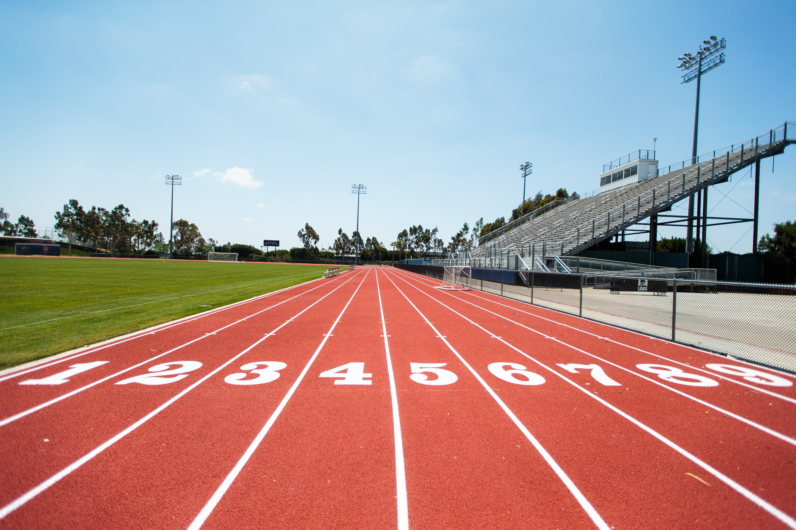
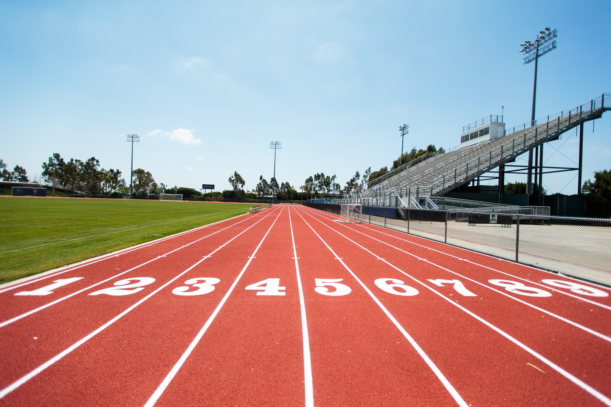

Extracurriculars
 

This year I spent my time outside of school either running track or playing D&D. During the Fall, I went to Track conditioning to get ready for the season in the Spring. During the Track season, my events were the 400 meter dash, the 200 meter dash, and the Long Jump. Every Friday, I played D&D with my friends online because some of us live in Florida.